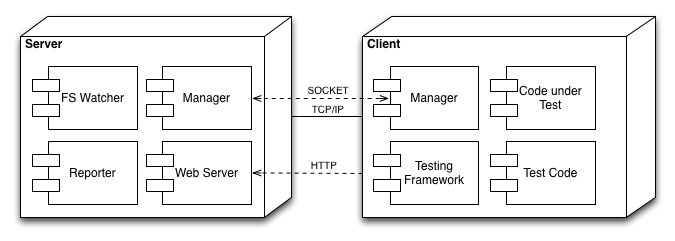
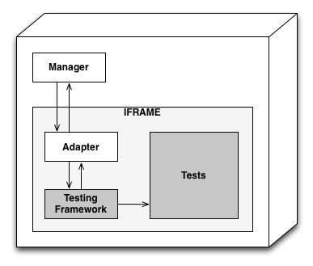
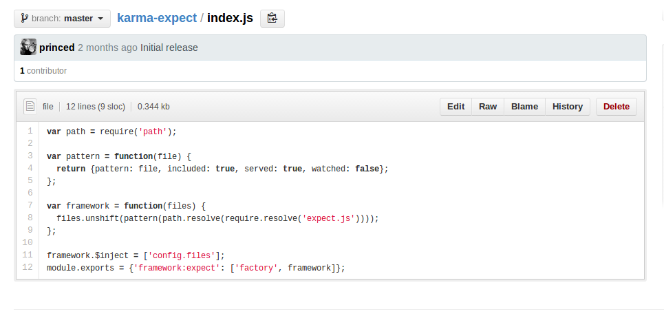

Большой проект + Большая команда = Много кода
Появилась необходимость привести в порядок большой участок кода(модуль). Который несет ответственность за важную функциональность.
Какие инструменты были в моем распоряжении
И желание!
Не все гладко было в этом королевстве.
*Еще в стадии внедрения в проект
Все тот же index.html + Make сборки файлов
$(NPM_BIN)/borschik -i dist/some-file.js --minimize=no -o dist/_some-processed-file.js $(NPM_BIN)/grunt $(MAKE) grunt-clean
Проблема. Каждый раз надо добавлять файл в index.html и Make. Чревато ошибкам.
...Вроде что-то, что может решить мои проблемы...
И задача есть под такое дело.
Надо попробовать!
Karma - это инструмент для автоматического запуска JavaScript тестов, написанный на nodejs.
Не framework для написания тестов!
Автор Vojta Jína (Google, AngularJs Team member)
Установка:
npm install karma karma init npm install mocha --save-dev npm install karma-phantomjs-launcher --save-dev npm install karma-expectРезультат karma.conf.js
module.exports = function(config) {
config.set({
basePath: '',
frameworks: ['mocha', 'expect'],
files: [
'test/**/*_test.js'
],
exclude: [],
reporters: ['progress'],
port: 9876,
colors: true,
logLevel: config.LOG_INFO,
autoWatch: true,
browsers: ['PhantomJS'],
captureTimeout: 60000,
singleRun: false
});
Избавляемся от index.html
files: [
// Простой шаблон для загрузки все файлов с тестами
// Эквивалент для {pattern: 'test/unit/*.spec.js',
// watched: true, served: true, included: true}
'test/unit/*_test.js',
// файл который загружается на сервер, но за которым не следим
{pattern: 'compiled/index.html', watched: false},
// файл за которым только следим
{pattern: 'app/index.html', included: false, served: false}
],
]
Frameworks:
frameworks: ['mocha', 'expect'],
Preprocessors:
preprocessors: {
'/*.coffee': ['coffee'],
'/*.html': ['html2js']
},
Reporters:
reporters: ['progress', 'coverage'],
Клиент - Сервер

Inversion of Control / Dependency Injection
Клиент

Репортер
module.exports = function(config) {
config.set({
...
plugins:[
{'reporter:console', ['type', function(){
this.onBrowserComplete = function (browser) {
console.log('Result: ', browser.lastResult.failed ? 'Fail' : 'Ok');
}
}]}
]
});
 Пример framework-а
Загрузка зависимостей/Модульность в Yandex.Mail
/*borschik:include:common.js*/
var borschik = require('borschik');
var stream = require('./lib/stream');
var createBorschikPreprocessor = function(args, config, logger, helper) {
config = config || {};
var log = logger.create('preprocessor.borschik');
var defaultOptions = {
'comments': false,
'freeze': false,
'minimize': false,
'tech': 'js'
};
var options = helper.merge(defaultOptions, args.options || {}, config.options || {});
...
};
createBorschikPreprocessor.$inject = ['args', 'config.borschikPreprocessor', 'logger', 'helper'];
module.exports = { 'preprocessor:borschik': ['factory', createBorschikPreprocessor] };
return function(content, file, done) {
var output = new stream.Writable();
var result = null;
var onError = function(errorObject) {
log.error('%s\n at %s', errorObject.message, file.originalPath);
};
log.debug('Processing "%s".', file.originalPath);
var opts = helper._.clone(options);
opts.input = file.originalPath;
opts.output = output;
output.on('data', function(data) {
done(data);
});
try {
result = borschik.api(opts).fail(onError);
} catch (e) {
onError(e);
return;
}
};
Important contact information goes here.